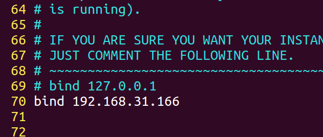

一、NoSQL介绍
1.1、NoSQL：一类新出现的数据库(not only sql)，它的特点：
- 不支持SQL语法
- 存储结构跟传统关系型数据库中的那种关系表完全不同，nosql中存储的数据都是KV形式
- NoSQL的世界中没有一种通用的语言，每种nosql数据库都有自己的api和语法，以及擅长的业务场景
- NoSQL中的产品种类相当多：
- Mongodb
- Redis
- Hbase hadoop
- Cassandra hadoop
二、Redis 简介
- Redis是一个开源的使用ANSI C语言编写、支持网络、可基于内存亦可持久化的日志型、Key-Value数据库，并提供多种语言的API。从2010年3月15日起，Redis的开发工作由VMware主持。从2013年5月开始，Redis的开发由Pivotal赞助。
- Redis是 NoSQL技术阵营中的一员，它通过多种键值数据类型来适应不同场景下的存储需求，借助一些高层级的接口使用其可以胜任，如缓存、队列系统的不同角色
2.1、Redis 特性
- Redis 与其他 key - value 缓存产品有以下三个特点：
- Redis支持数据的持久化，可以将内存中的数据保存在磁盘中，重启的时候可以再次加载进行使用。
- Redis不仅仅支持简单的key-value类型的数据，同时还提供list，set，zset，hash等数据结构的存储。
- Redis支持数据的备份，即master-slave模式的数据备份。
2.2、Redis 优势
- 性能极高 – Redis能读的速度是110000次/s,写的速度是81000次/s 。
- 丰富的数据类型 – Redis支持二进制案例的 Strings, Lists, Hashes, Sets 及 Ordered Sets 数据类型操作。
- 原子 – Redis的所有操作都是原子性的，同时Redis还支持对几个操作全并后的原子性执行。
- 丰富的特性 – Redis还支持 publish/subscribe, 通知, key 过期等等特性。
2.3、Redis应用场景
- 用来做缓存(ehcache/memcached)——redis的所有数据是放在内存中的（内存数据库）
- 可以在某些特定应用场景下替代传统数据库——比如社交类的应用
- 在一些大型系统中，巧妙地实现一些特定的功能：session共享、购物车
- 只要你有丰富的想象力，redis可以用在可以给你无限的惊喜…….
2.4、GUI客户端
sudo snap install redis-desktop-manager
三、下载安装
Redis 版本号采用标准惯例：主版本号.副版本号.补丁级别,一个副版本号就标记为一个标准发行版本，例如 1.2，2.0，2.2，2.4，2.6，2.8，奇数的副版本号用来表示非标准版本,例如2.9.x发行版本是Redis 3.0标准版本的非标准发行版本。
3.1、第一步:下载
wget http://download.redis.io/releases/redis-4.0.11.tar.gz
3.2、第二步:解压
tar xzf redis-4.0.11.tar.gz
3.3、第三步:复制,放到/usr/local目录下面( 先创建文件夹/usr/local/redis/ )
sudo mv ./redis-4.0.11/* /usr/local/redis/
{kind=link}
3.4、第四步:进入redis目录
cd /usr/local/redis/
3.5、第五步:生成
sudo make
3.6、第六步: 测试,这段运行时间会比较长
sudo make test
3.7、第七步:安装,将Redis的命令安装到/usr/local/bin/目录
sudo make install
3.8、第八步: 安装完成后,我们进入目录/usr/local/bin中查看
cd /usr/local/bin
ls -all
redis-server redis服务器 redis-cli redis命令行客户端 redis-benchmark redis性能测试工具 redis-check-aof AOF文件修复工具 redis-check-rdb RDB文件检索工具
3.9、第九步: 配置文件,移动到/etc/目录下
配置文件目录为/usr/local/redis/redis.conf
sudo cp /usr/local/redis/redis.conf /etc/redis/
四、配置
- Redis的配置信息在/etc/redis/redis.conf
- 查看
sudo vi /etc/redis/redis.conf
4.1、核心配置选项
- 绑定ip:如果需要远程访问,可以将此行注释,或者绑定一个真实ip
bind 127.0.0.1
- 端⼝，默认为6379
- 是否以守护进程运行
- 如果以守护进程运行,则不会在命令行阻塞,类似服务
- 如果以非守护进程运行,则当前终端被阻塞
- 设置为yes表示守护进程,设置为no表示非守护进程
- 推荐设置为yes

- 数据文件
dbfilename dump.rdb dir /var/lib/redis
注意: /var/lib/redis 目录下面没有redis文件夹,需要我们手动创建
- 日志文件
logfile /var/log/redis/redis-server.log
- 数据库,默认有16个
database 16
- 主从复制,类似于双机备份
slaveof
4.2、参考资料
4.3、服务器端
- 服务端的命令为redis-server
- 可以使用help查看帮助文档
redis-server --help
- 推荐使用服务的方式管理redis服务
- 启动
sudo service redis start
- 停止
sudo service redis stop
- 重启 sudo service redis restart
- 个人习惯
ps -ef|grep redis 查看redis服务器进程 sudo kill -9 pid 杀死redis服务器 sudo redis-server /etc/redis/redis.conf 指定加载的配置文件
4.5、客户端
- 客户端的命令为redis-cli
- 可以使⽤help查看帮助⽂档
redis-cli --help
- 连接redis
redis-cli redis-cli -h 192.168.31.166 -p 6379
- 运行测试命令
- 切换数据库
- 数据库没有名称,默认16个,通过0-15来标识,链接redis默认选择第一个数据库
select n
五、数据结构
- redis是key-value的数据结构，每条数据都是⼀个键值对 键的类型是字符串(键不能重复)
Redis有5个基本数据结构,string、list、hash、set和zset。 它们是日常开发中使用频率非常高应用最为广泛的数据结构，把这5个数据结构都吃透了，你就掌握了Redis应用知识的一半了。
5.1、数据操作行为
- 保存
- 修改
- 获取
- 删除
5.2、string类型
字符串类型是Redis中最为基础的数据存储类型，它在Redis中是二进制安全的，这便意味着该类型可以接受任何格式的数据，如JPEG图像数据或Json对象描述信息等。在Redis中字符串类型的Value最多可以容纳的数据长度是512M。
5.2.1、保存
如果设置的键不存在则为添加，如果设置的键已经存在则修改
| 语法 | 说明 | 举例 |
| set key value | 设置键值 | set name 100cxy |
| set key seconds value | 设置键值以及过期时间,时间以秒为单位 | setex k1 3 100cxy |
| mset key1 value1 key2 value2 ... | 设置多个键值 | mset k1 html k2 css k3 javascrip |
| append key value | 追加值 | append 'k1' 'html5' |
5.2.2、获取
| 语法 | 说明 | 举例 |
| get key | 根据键获取值,如果不存在此键返回nil | get name |
| mget key1 key2 ... | 根据多个键获取多个值 | mget k1 k2 k3 |
5.2.3、键命令
| 语法 | 说明 | 举例 |
| keys pattern | 查找键,参数支持正则表达式 | 1、keys * 2、 keys 'k*' |
| exists key | 判断键是否存在,如果存在返回1,不存在返回0 | exists k1 |
| type key | 查看键对应的value的类型 | type k1 |
| del key1 key2... | 删除键对应的值 | del k1 k2 |
| expire key seconds | 设置过期时间,以秒为单位,如果没有指定过期时间则一直存在,直到使用DEL移除 | expire k1 3 |
| ttl key | 查看有效时间，以秒为单位 当 key 不存在时，返回 -2 。 当 key 存在但没有设置剩余生存时间时，返回 -1 。 否则，以秒为单位，返回 key 的剩余生存时间。 | ttl name |
5.3、Hash类型
5.3.1、 hash类型
- hash⽤于存储对象，对象的结构为属性、值
- 值的类型为string
5.3.2、 增加、修改
| 语法 | 说明 | 举例 |
| hset key field value | 设置单个属性 | hset user name 100cxy |
| hmset key field1 value1 field2 value2 | 设置多个属性 | hmset user2 name 100cxy age 100 |
5.3.3、获取
| 语法 | 说明 | 举例 |
| hkeys key | 获取指定键所有的属性 | hkeys user2 |
| hget key field | 获取一个属性的值 | hget user2 name |
| hmget key field1 field2 .... | 获取多个属性的值 | hmget user2 name age |
| hvals key | 取所有属性的值 | hvals user2 |
5.3.4、删除
| 语法 | 说明 | 举例 |
| hdel key field1 field2 ... | 删除属性，属性对应的值会被⼀起删除 说明: 删除整个hash键及值，使⽤del命令 | hdel user2 age |
5.4、list类型
5.4.1、增加
| 语法 | 说明 | 举例 |
| lpush key value1 value2 ... | 在左侧插⼊数据 | lpush k1 java python go |
| rpush key value1 value2 ... | 在右侧插⼊数据 | rpush k1 html css js |
| linsert key before|after piovt value | 在指定元素的前或后插⼊新元素 | linsert k1 before java php |
5.4.2、获取
- 返回列表⾥指定范围内的元素
- start、stop为元素的下标索引
- 索引从左侧开始，第⼀个元素为0
- 索引可以是负数，表示从尾部开始计数，如-1表示最后⼀个元素
- 语法
lrange key start stop
5.4.3、设置指定索引位置的元素值
- 索引从左侧开始，第⼀个元素为0
- 索引可以是负数，表示尾部开始计数，如-1表示最后⼀个元素
- 语法
lset key index value
5.4.4、删除
- 删除指定元素
- 将列表中前count次出现的值为value的元素移除
- count > 0: 从头往尾移除
- count < 0: 从尾往头移除
- count = 0: 移除所有
- 语法
lrem key count value
- 举例
-- 向k4列表中添加a b a b a blpush k4 a b a b a b
-- 从列表右侧开始删除2个blrem k4 -2 b
-- 查看列表中所有元素lrange k4 0 -1
5.5、set类型
- ⽆序集合
- 元素为string类型
- 元素具有唯⼀性，不重复
- 说明：对于集合没有修改操作
5.5.1、增加
| 语法 | 说明 | 举例 |
| sadd key member1 member2 ... | 添加元素 | sadd k1 'zhangsan' 'lisi' 'wangwu' |
5.5.2、获取
| 语法 | 说明 | 举例 |
| smembers key | 返回所有的元素 | smembers k1 |
5.5.3、删除
| 语法 | 说明 | 举例 |
| srem key | 删除指定元素 | srem k1 wangwu |
5.6、zset类型
- sorted set，有序集合
- 元素为string类型
- 元素具有唯⼀性，不重复
- 每个元素都会关联⼀个double类型的score，表示权重，通过权重将元素从⼩到⼤排序
- 说明：没有修改操作
5.6.1、增加
| 语法 | 说明 | 举例 |
| zadd key score1 member1 score2 member2 | 添加 | zadd k1 4 lisi 5 wangwu 6 zhaoliu 3 zhangsan |
5.6.2、获取
| 语法 | 说明 | 举例 |
| zrange key start stop | 返回指定范围内的元素 start、stop为元素的下标索引 索引从左侧开始，第⼀个元素为0 索引可以是负数，表示从尾部开始计数，如-1表示最后⼀个元素 | zrange k1 0 -1 |
| zrangebyscore key min max | 返回score值在min和max之间的成员 | zrangebyscore k1 5 6 |
| zscore key member | 返回成员member的score值 | zscore k1 zhangsan |
5.6.3、删除
| 语法 | 说明 | 举例 |
| zrem key member1 member2 ... | 删除指定元素 | zrem k1 zhangsan |
| zremrangebyscore key min max | 删除权重在指定范围的元素 | zremrangebyscore k1 5 6 |
六、与Python交互
6.1、安装
| 方式 | 代码 |
| pip包管理工具 | pip install redis |
| easy_install | easy_install redis |
| 源码安装 | 解压: unzip master.zip 进入文件夹: cd redis-py-master |
6.2、调用模块
- 引⼊模块
from redis import *
"""这个模块中提供了StrictRedis对象，⽤于连接redis服务器，并按照不同类型提供了不同⽅法，进⾏交互操作"""6.3、StrictRedis对象
- 通过init创建对象，指定参数host、port与指定的服务器和端⼝连接，host默认为localhost，port默认为6379，db默认为0
sr = StrictRedis(host='localhost', port=6379, db=0)
简写
sr=StrictRedis()
6.4、准备
- 在桌面上创建redis目录
- 使用pycharm打开redis目录
- 创建string_demo.py文件
# -*- coding: utf-8 -*-# @Time : 18-9-24 下午6:34# @Author : wengwenyu# @Email : wengwenyu@aliyun.com# @File : demo.py# @Software: PyCharmfrom redis import *
if __name__ == '__main__':
try:
# 创建StrictRedis对象,与redis服务器建立连接
sr = StrictRedis()
except Exception as e:
print(e)
6.5 String 操作
redis中的String在内存中按照一个name对应一个value来存储的
- 语法
set(name,value,ex=None,px=None,nx=False,xx=False)
- 参数说明
- ex, 过期时间(秒)
- px, 过期时间(毫秒)
- nx, 如果设置为True,则只有name不存在时,当前set操作才执行
- xx, 如果设置为True,则只有当name存在时,当前操作才执行
6.5.1 string-增加
- ⽅法set，添加键、值，如果添加成功则返回True，如果添加失败则返回False
- 编写代码如下
from redis import *
if __name__=="__main__":
try:
# 创建StrictRedis对象，与redis服务器建⽴连接
sr=StrictRedis()
#添加键name，值为100cxy
result=sr.set('name','100cxy')
#输出响应结果，如果添加成功则返回True，否则返回False
print(result)
except Exception as e:
print(e)
6.5.2 string-获取
- ⽅法get，添加键对应的值，如果键存在则返回对应的值，如果键不存在则返回None
- 编写代码如下
from redis import *
if __name__=="__main__":
try:
#创建StrictRedis对象，与redis服务器建⽴连接
sr=StrictRedis()
#获取键name的值
result = sr.get('name')
#输出键的值，如果键不存在则返回None
print(result)
except Exception as e:
print(e)
- decode_responses=True 输出汉字
6.5.3 string-修改
- ⽅法set，如果键已经存在则进⾏修改，如果键不存在则进⾏添加
- 编写代码如下
from redis import *
if __name__=="__main__":
try:
#创建StrictRedis对象，与redis服务器建⽴连接
sr=StrictRedis()
#设置键name的值，如果键已经存在则进⾏修改，如果键不存在则进⾏添加
result = sr.set('name','cxy100')
#输出响应结果，如果操作成功则返回True，否则返回False
print(result)
except Exception as e:
print(e)
6.5.4 string-删除
- ⽅法delete，删除键及对应的值，如果删除成功则返回受影响的键数，否则则返 回0
- 编写代码如下
from redis import *
if __name__=="__main__":
try:
#创建StrictRedis对象，与redis服务器建⽴连接
sr=StrictRedis()
#设置键name的值，如果键已经存在则进⾏修改，如果键不存在则进⾏添加
result = sr.delete('name')
#输出响应结果，如果删除成功则返回受影响的键数，否则则返回0
print(result)
except Exception as e:
print(e)
6.5.6 获取键
- ⽅法keys，根据正则表达式获取键
- 编写代码如下
from redis import *
if __name__=="__main__":
try:
#创建StrictRedis对象，与redis服务器建⽴连接
sr=StrictRedis()
#获取所有的键
result=sr.keys()
#输出响应结果，所有的键构成⼀个列表，如果没有键则返回空列表
print(result)
except Exception as e:
print(e)
6.5.7 其他(了解)
- 说明: 下表中sr为StrictRedis对象
| 方法 | 说明 | 举例 |
| setnx(name,value) | 设置值,只有name不存在时,执行设置(添加)操作 | r = sr.setnx('name','张三') 第一次设置时,键name不存在,r为bool值,返回true,当第二次运行这段代码因为key已经存在,所以r返回false |
| mset(*args,**kwargs) | 批量设置值 | r = sr.mset(n1='张三', n2='李四') |
| get(name) | 获取值 | sr.get('n1') |
| getrange(key,start,end) | 获取字节序列(非字符),前面我们修改汉字问题的时候一般不是字节序列而是字符序列 | sr.getrange('n1',0,1) |
| setrange(name,offset,value) | 修改字符串内容,从指定字符串索引开始向后替换(新值太长,则向后添加) | sr.setrange(name,0,'python') |
| strlen(name) | 返回name对应值的字节长度(一个汉字3个字节) | sr.strlen('name') |
6.6 Hash操作
6.6.1 Hash-增加
6.6.1.1 设置单个键值对
# -*- coding: utf-8 -*-# @Time : 18-9-25 下午8:11# @Author : wengwenyu# @Email : wengwenyu@aliyun.com# @File : 连接redis.py# @Software: PyCharmfrom redis import *
if __name__ == '__main__':
try:
# 创建strictRedis对象,与redis服务器建立连接
sr = StrictRedis(decode_responses=True)
# hset(self, name, key, value)
# 当name对应的hash中不存在当前key时则创建(相当于添加)
sr.hset('h1', 'name', '张三')
# 获取
print(sr.hget('h1', 'name'))
except Exception as e:
print(e)
6.6.1.2 设置多个键值对
# -*- coding: utf-8 -*-# @Time : 18-9-25 下午8:11# @Author : wengwenyu# @Email : wengwenyu@aliyun.com# @File : 连接redis.py# @Software: PyCharmfrom redis import *
if __name__ == '__main__':
try:
# 创建strictRedis对象,与redis服务器建立连接
sr = StrictRedis(decode_responses=True)
sr.hmset('h2', {'name': '李四', 'age': 20})
print(sr.hmget('h2', 'name', 'age'))
except Exception as e:
print(e)
6.6.2 Hash-获取
6.6.2.1 在name对应的hash中获取根据key获取value
- 在上面例题中,设置单个值的时候我们使用到了
6.6.2.2 在name对应的hash中获取多个key的值
- 在上面例题中,设置多个值的时候我们使用到了
6.6.2.3 获取name对应hash的所有键值
# -*- coding: utf-8 -*-# @Time : 18-9-25 下午8:11# @Author : wengwenyu# @Email : wengwenyu@aliyun.com# @File : 连接redis.py# @Software: PyCharmfrom redis import *
if __name__ == '__main__':
try:
# 创建strictRedis对象,与redis服务器建立连接
sr = StrictRedis(decode_responses=True)
print(sr.hgetall('h2'))
except Exception as e:
print(e)
6.6.3 Hash-修改
- hset和hmset 不存在则创建,存在则修改
6.6.4 Hash-删除
# -*- coding: utf-8 -*-# @Time : 18-9-25 下午8:11# @Author : wengwenyu# @Email : wengwenyu@aliyun.com# @File : 连接redis.py# @Software: PyCharmfrom redis import *
if __name__ == '__main__':
try:
# 创建strictRedis对象,与redis服务器建立连接
sr = StrictRedis(decode_responses=True)
sr.hdel('h2', 'name')
except Exception as e:
print(e)
6.6.5 其他
| 方法 | 说明 | 举例 |
| hkeys(name) | 获取name对应的hash中所有的key的值 | sr.hkeys('h2') |
| hvals(name) | 获取name对应的hash中所有的value值 | sr.hvals('h2') |
| hlen(name) | 获取name对应的hash中键值对的个数 | sr.hlen('h2') |
6.7、List 操作
6.7.1、List-增加
# -*- coding: utf-8 -*-# @Time : 18-9-25 下午8:11# @Author : wengwenyu# @Email : wengwenyu@aliyun.com# @File : 连接redis.py# @Software: PyCharmfrom redis import *
if __name__ == '__main__':
try:
# 创建strictRedis对象,与redis服务器建立连接
sr = StrictRedis(decode_responses=True)
# 7个小矮人的英文名
# lpush(name,values) 在name对应的list中添加元素,每个新的元素都添加到列表的最左边
# 补充:rpush(name,values) ..........................................最右边
sr.lpush('xiao_ai_ren', 'Doc', 'Grumpy', 'Happy', 'Sleepy', 'Docpey', 'Bashful', 'Sneezy')
print(sr.lrange('xiao_ai_ren', 0, -1))
except Exception as e:
print(e)
6.7.2 List-获取
- lrange(name,start,end) 在name对应的列表分片获取数据
- lindex(name,index) 在name对应的列表中根据索引获取列表元素
6.7.3 List-修改
6.7.3.1 在已有列表里面插入新值
from redis import *
if __name__ == '__main__':
try:
# 创建strictRedis对象,与redis服务器建立连接
sr = StrictRedis(decode_responses=True)
# 在Happy的前面插入cry 在Happy的后面插入 smile
sr.linsert('xiao_ai_ren', 'before', 'Happy', 'cry')
sr.linsert('xiao_ai_ren', 'after', 'Happy', 'smile')
print(sr.lrange('xiao_ai_ren', 0, -1))
except Exception as e:
print(e)
6.7.3.2 根据索引重新赋值
语法
lset(name,index,value) # 对name对应的list中的某一个索引位置重新赋值
参数说明
- index,list索引的位置
- value,要设置的值
# -*- coding: utf-8 -*-# @Time : 18-9-25 下午8:11# @Author : wengwenyu# @Email : wengwenyu@aliyun.com# @File : 连接redis.py# @Software: PyCharmfrom redis import *
if __name__ == '__main__':
try:
# 创建strictRedis对象,与redis服务器建立连接
sr = StrictRedis(decode_responses=True)
print('修改前:{}'.format(sr.lrange('xiao_ai_ren', 0, -1)))
# 修改索引为4的值 为cry2
sr.lset('xiao_ai_ren', 4, 'cry2')
print('修改后:{}'.format(sr.lrange('xiao_ai_ren', 0, -1)))
except Exception as e:
print(e)
6.7.4 List-删除
6.7.4.1 删除指定值
# -*- coding: utf-8 -*-# @Time : 18-9-25 下午8:11# @Author : wengwenyu# @Email : wengwenyu@aliyun.com# @File : 连接redis.py# @Software: PyCharmfrom redis import *
if __name__ == '__main__':
try:
# 创建strictRedis对象,与redis服务器建立连接
sr = StrictRedis(decode_responses=True)
print('删除前:{}'.format(sr.lrange('xiao_ai_ren', 0, -1)))
# 0表示删除列表中所有指定的值, 2表示从前往后删除(如果值存在)2个指定的值 -2表示从后往前
sr.lrem('xiao_ai_ren', 0, 'cry2')
print('删除后:{}'.format(sr.lrange('xiao_ai_ren', 0, -1)))
except Exception as e:
print(e)
6.8、Set操作
6.8.1、Set-增加
# -*- coding: utf-8 -*-# @Time : 18-9-25 下午8:11# @Author : wengwenyu# @Email : wengwenyu@aliyun.com# @File : 连接redis.py# @Software: PyCharmfrom redis import *
if __name__ == '__main__':
try:
# 创建strictRedis对象,与redis服务器建立连接
sr = StrictRedis(decode_responses=True)
sr.sadd('name', 'zhangsan', 'zhangsan', 'lisi')
print(sr.smembers('name'))
except Exception as e:
print(e)

6.8.2、Set-获取
- 查看上面案例
6.9.4、Set-删除
- srem(name,values) 在name对应的集合中删除某些值
6.9 数据库小案例: mysql与redis结合用户登录
- 参考代码
# -*- coding: utf-8 -*-# @Time : 18-9-26 下午2:06# @Author : wengwenyu# @Email : wengwenyu@aliyun.com# @File : 注册登录.py# @Software: PyCharm# 1. 注册----> 用户输入账号,密码(加密 md5 sha1 sha256..) ---> 存进mysql数据库(永久)# 2. 登录-----> 用户输入账号密码 -----> redis(如果redis里面能找到 登录, 缓存,20)------> mysql ----> 先存到redis# from hashlib import *import hashlib
# 导入mysql的驱动from pymysql import *
# 导入redis 驱动from redis import *
# mysql的登录def mysql_login(username, upwd):
# 第一步： 能到这里 说明 账号是找不到的 先找有没有这个账号 有 就提取密码做比较
# 没有就 直接说 没这个用户
try:
# 1. 创建Connection连接
conn = connect(host='localhost', port=3306, user='root', password='123456', database='D6', charset='utf8')
# 2. 获得Cursor对象
cs1 = conn.cursor()
# 3. 查询
r = cs1.execute('select upwd from users where uname="{}"'.format(username))
a = cs1.fetchone()
a = a[0]
print(a)
# 如果这个r里面有值 就说明是 用户存在 开始比较密码
# 如果这个r里面没有值 账号都不在
if r == None:
# 账号不在
print('请去注册')
else:
if upwd == a:
# 存 redis
sr = StrictRedis(decode_responses=True)
sr.set(username, upwd)
print('登录成功')
else:
print('密码错误')
except Exception as e:
print(e)
print('mysql的登录函数')
# redis的登录def redis_login():
username = input('请输入用户名:')
password = input('请输入密码:')
# 对用户输入的密码 加密
s1 = hashlib.sha1()
s1.update(password.encode('utf8'))
# 得到加密以后的字符串
upwd = s1.hexdigest()
# 连接 redis
try:
# redis 的连接 默认ip 本地 和 默认端口 6379
sr = StrictRedis(decode_responses=True)
# 查？－－－－－> 查？ 用户名 对应的密码
# username 用户名
r = sr.get(username)
if r == None:
# 说明redis里面找不到 ---> 只能确定 redis里面没有
mysql_login(username, upwd)
else:
# upwd>? 是用户输入的 r是redis找出来的密码
if upwd == r:
print('登录成功')
else:
print('密码错误')
except Exception as e:
print(e)
print('redis的登录函数')
# mysql的注册def register():
# 用户输入1的时候 注册 (往mysql里面填数据) 表到低有没有
# 1. 让用户 输入 账号 密码
username = input('请输入账号:')
password = input('请输入密码:')
# 2. 为密码加密
# 选择加密方式
s1 = hashlib.sha1()
# 添加加密内容
s1.update(password.encode('utf8'))
# upwd 就是加密以后的字符串 获取加密以后的字符串
upwd = s1.hexdigest()
print(username, upwd)
try:
# 1. 创建Connection连接
conn = connect(host='localhost', port=3306, user='root', password='123456', database='D6', charset='utf8')
# 2. 获得Cursor对象
cs1 = conn.cursor()
# 3. 执行sql语句
cs1.execute('insert into users values(0,"{}","{}")'.format(username, upwd))
# 4. commit
conn.commit()
except Exception as e:
print(e)
def main():
# 1. 用户输入 来确定执行什么功能
a = input('请选择是[1]注册还是[2]登录:')
# 2. 判断用户 输入的是1 还是2
if a == '1':
register()
elif a == '2':
# 一般登录的时候 先从redis里面找 找不到再去 mysql
redis_login()
else:
print('输入有误')
if __name__ == '__main__':
main()
七、搭建主从
7.1. 主从概念
7.1.1 思考:为什么要主从? 比如: 备份数据、读写分离
数据备份
读写分离
- 一个master可以拥有多个slave,一个slave又可以拥有多个slave，如此下去,形成了强大的多级服务器集群架构
- master用来写数据,slave用来读数据,经统计:网站的读写比例是10:1
- 通过主从配置可以实现 读写分离
- master和slave都是一个redis实例(redis服务)
7.2 配置主
- 查看当前主机的ip地址
- 我们就不能再使用127.0.0.1了，需要修改/etc/redis/redis.conf文件
sudo vi /etc/redis/redis.conf
bind 192.168.31.166
- 重启redis
sudo service redis stop
redis-server redis.conf
7.3 配置从(同一台机器配置从)
- 复制/etc/redis/redis.conf文件到当前文件夹下面
sudo cp redis.conf ./slave.conf
- 修改redis/slave.conf文件
sudo vi slave.conf
- 编辑内容
bind 从服务器ip
slaveof 主服务器ip 主服务端口号
port 从服务器端口号

- redis服务
sudo redis-server slave.conf
- 查看主从关系
redis-cli -h ip info Replication
4. 数据操作
- 在master和slave分别执行info命令,查看输出信息 进入主客户端
redis-cli -h 192.168.31.166 -p 6379
- 进入从的客户端
redis-cli -h 192.168.31.166 -p 6378
- 在master上写数据
set name 100cxy
- 在slave上读数据
get 100cxy
八、搭建集群
1. 为什么要搭建集群
- 之前我们已经讲了主从概念,一主可以多从,如果同时的访问量过大(1000w),主服务肯定会挂掉,数据服务就挂掉了或者发生自然灾难
- 大公司都会有很多的服务器(华东地区、华南地区、华中地区、华北地区、西北地区、西南地区、东北地区、港澳台地区)
2. 集群的概念
- 集群是一组相互独立的、通过高速网路互联的计算机,他们构成了一个组,并以单一系统的模式加以管理.一个客户与集群相互作用时,集群像是一个独立的服务器.集群配置是用于提高可用性和可缩放性．( 简而言之:集群就是同一个业务，部署在多个服务器上,提高对外服务和处理的能力 )
注意:当请求到来首先由负载均衡服务器处理,把请求转发到另外一台服务器上.
3. Redis集群
- 分类
- 软件层面
- 硬件层面
- 软件层面:只有一台电脑,在这一台电脑上启动了多个redis服务
- 硬件层面:存在多台实体的电脑,每台电脑上都启动了一个redis或者多个redis服务.
4. 搭建集群
当前拥有两台主机192.168.31.25、192.168.31.166，这⾥的IP在使⽤时要改为实际值
5. 参考阅读
配置机器1
- 在演示中，192.168.31.166为当前ubuntu机器的ip
- 在192.168.31.166上进⼊Desktop⽬录，创建conf⽬录
- 在conf⽬录下创建⽂件7000.conf，编辑内容如下
port 7000
bind 192.168.31.166
daemonize yes
pidfile 7000.pid
cluster-enabled yes
cluster-config-file 7000_node.conf
cluster-node-timeout 15000
appendonly yes
- 在conf⽬录下创建⽂件7001.conf，编辑内容如下
port 7001
bind 192.168.31.166
daemonize yes
pidfile 7001.pid
cluster-enabled yes
cluster-config-file 7001_node.conf
cluster-node-timeout 15000
appendonly yes
- 在conf⽬录下创建⽂件7002.conf，编辑内容如下
port 7002
bind 192.168.31.166
daemonize yes
pidfile 7002.pid
cluster-enabled yes
cluster-config-file 7002_node.conf
cluster-node-timeout 15000
appendonly yes
- 总结：三个⽂件的配置区别在port、pidfile、cluster-config-file三项
- 使⽤配置⽂件启动redis服务
redis-server 7000.conf
redis-server 7001.conf
redis-server 7002.conf
配置机器2
- 在演示中，192.168.31.25为当前ubuntu机器的ip
- 在192.168.31.25上进⼊Desktop⽬录，创建conf⽬录
- 在conf⽬录下创建⽂件7003.conf，编辑内容如下
port 7003
bind 192.168.31.25
daemonize yes
pidfile 7003.pid
cluster-enabled yes
cluster-config-file 7003_node.conf
cluster-node-timeout 15000
appendonly yes
- 在conf⽬录下创建⽂件7004.conf，编辑内容如下
port 7004
bind 192.168.31.25
daemonize yes
pidfile 7004.pid
cluster-enabled yes
cluster-config-file 7004_node.conf
cluster-node-timeout 15000
appendonly yes
- 在conf⽬录下创建⽂件7005.conf，编辑内容如下
port 7005
bind 192.168.31.25
daemonize yes
pidfile 7005.pid
cluster-enabled yes
cluster-config-file 7005_node.conf
cluster-node-timeout 15000
appendonly yes
- 总结：三个⽂件的配置区别在port、pidfile、cluster-config-file三项
- 使⽤配置⽂件启动redis服务
redis-server 7003.conf
redis-server 7004.conf
redis-server 7005.conf
创建集群
- redis的安装包中包含了redis-trib.rb，⽤于创建集群
- 接下来的操作在192.168.31.166机器上进⾏
- 安装ruby环境,因为redis-trib.rb 是用ruby开发的
sudo apt install ruby
- 但是后续我们执⾏集群这个指令在某些机器上可能会报错,主要原因是由于安装的 ruby 不是最 新版本
- 天朝的防⽕墙导致⽆法下载最新版本,所以需要设置 gem 的源
- 解决办法如下:
-- 先查看⾃⼰的 gem 源是什么地址
gem source -l -- 如果是https://rubygems.org/ 就需要更换
-- 更换指令为
gem sources --add https://gems.ruby-china.com/ --remove https://rubygems.org/
-- 通过 gem 安装 redis 的相关依赖
sudo gem install redis
-- 然后重新执⾏指令
redis-trib.rb create --replicas 1 192.168.31.166:7000 192.168.31.166:7001 192.168.31.166:7002 192.168.31.25:7003 192.168.31.25:7004 192.168.31.25:7005
- 将命令复制，这样可以在任何⽬录下调⽤此命令
sudo cp /usr/local/redis/src/redis-trib.rb /usr/local/bin/
数据验证
- redis cluster在设计的时候，就考虑到了去中⼼化，去中间件，也就是说，集群中 的每个节点都是平等的关系，都是对等的，每个节点都保存各⾃的数据和整个集 群的状态。每个节点都和其他所有节点连接，⽽且这些连接保持活跃，这样就保 证了我们只需要连接集群中的任意⼀个节点，就可以获取到其他节点的数据
- Redis集群没有并使⽤传统的⼀致性哈希来分配数据，⽽是采⽤另外⼀种叫做哈希 槽 (hash slot)的⽅式来分配的。redis cluster 默认分配了 16384 个 slot，当我们 set⼀个key 时，会⽤CRC16算法来取模得到所属的slot，然后将这个key 分到哈 希槽区间的节点上，具体算法就是：CRC16(key) % 16384。所以我们在测试的 时候看到set 和 get 的时候，直接跳转到了7000端⼝的节点
- Redis 集群会把数据存在⼀个 master 节点，然后在这个 master 和其对应的salve 之间进⾏数据同步。当读取数据时，也根据⼀致性哈希算法到对应的 master 节 点获取数据。 只有当⼀个master 挂掉之后，才会启动⼀个对应的 salve 节点，充 当 master
- 需要注意的是：必须要3个或以上的主节点，否则在创建集群时会失败，并且当存 活的主节点数⼩于总节点数的⼀半时，整个集群就⽆法提供服务了
- 根据上图可以看出，当前搭建的主服务器为7000、7001、7003，对应的从服务器是7004、7005、7002
- 在192.168.31.166机器上连接7002，加参数-c表示连接到集群
redis-cli -h 192.168.31.166 -c -p 7002
- 写⼊数据
set name 1000cxy
- ⾃动跳到了7003服务器，并写⼊数据成功
十、安全、备份、持久化
10.1 安全
如果公网ip开放着,6379端口也开放着,那别人就可以远程连接服务器,比如我在/root/.ssh/authorized_keys存放公钥秘钥文件里面存了自己的公钥,就能像超级管理员一样控制你的电脑,这就是redis漏洞,解决这个漏洞的方法很多,设置密码,监听内网ip,加防火墙都可以解决,还有就是以普通的用户身份启动.
- 设置监听ip
bind 127.0.0.1//可以是多个ip,用空格分隔
- 设置监听端口
port 16000 # 默认:6379
- 设置密码 (redis.conf)
-- 在redis配置文件里面添加requirepass 100cxy
-- 客户端登录redis-cli -a 100cxy
- 将config命令改名或者禁用 (redis.conf)
-- 改名:在配置文件里面添加rename-command CONFIG cxy
-- 禁用 空字符串rename-command CONFIG ''
10.2、Redis持久化
两种持久化的方式：快照（RDB文件）和追加式文件（AOF文件）
| 方式 | 说明 |
RDB (Redis DataBase) | 简而言之,就是在不同的时间点,将redis存储的数据生成快照并存储到磁盘等介质上 |
AOF (Append Only File) | 相对于RDB而言换了一个角度来实现持久化,那就是将redis执行过的所有写指令记录下来,在下次重启的时候,只要把这些写指令从前到后再重复执行一遍,就可以实现数据恢复了 |
说明: RDB和AOF两种方式也是可以同时使用,在这种情况下,如果redis重启的话,则有限采用AOF方式来进行数据恢复,这是因为 AOF方式恢复数据的完整度更高;如果你没有数据持久化的需求,也可以关闭RDB和AOF方式,这样的话,redis将变成一个纯内存的数据库,就像memcache一样.